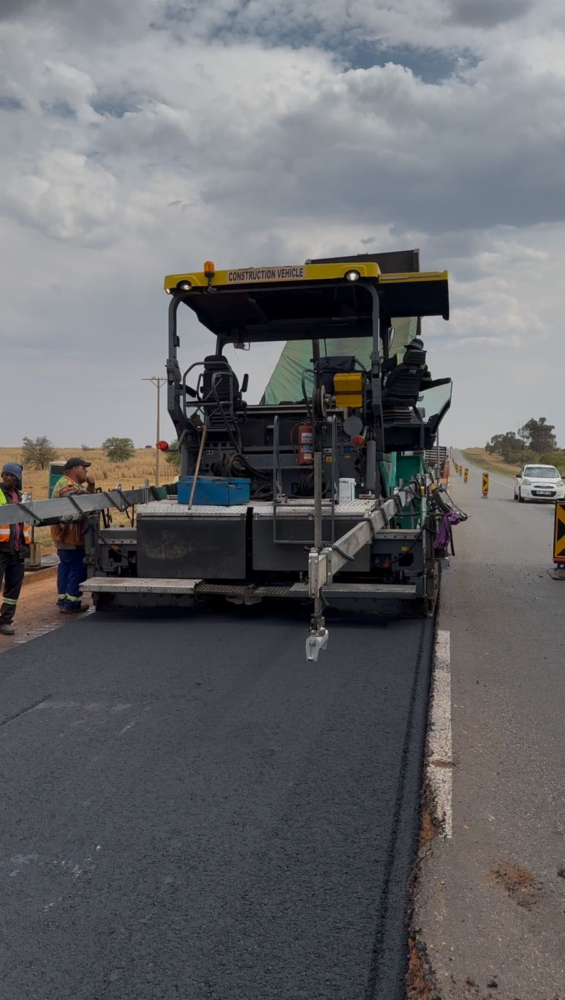
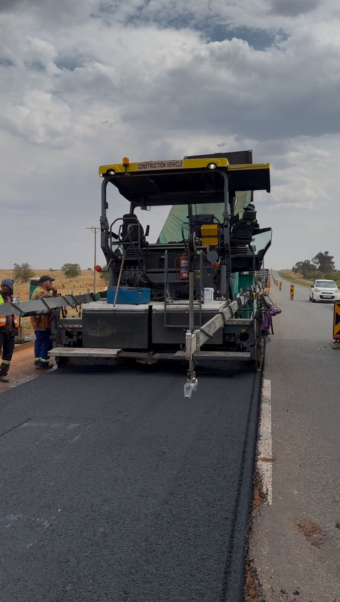

Featured Projects
Resurfacing of National Route N12 Section 15 (Wolmaransstad to km 46.0) for SANRAL
Role: Assistant Resident Engineer
Duration: September 2024 - Present
Project Value: R149 million
Description: Oversaw the resurfacing operations of the N12 Section 15, ensuring compliance with SANRAL and COTO specifications. Responsibilities included site inspections, contractor management, and adherence to quality control procedures.
 


Download My CV
Interested in working with me? Download my CV below:
Download CV